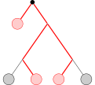
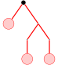

Is the set of trees convex?
Joint work with Diane Puges and Stephan Wagner
Daniel Brosch
University of Klagenfurt
17 August 2023
Is the set of trees convex?
And what does this even mean?
Joint work with Diane Puges and Stephan Wagner
Daniel Brosch
University of Klagenfurt
17 August 2023
Can we linearly interpolate between "infinite" trees?
Infinite tree $:=$ sequence of trees $\mathcal{T} = (T_1,T_2, T_3,\ldots)$ of increasing sizeWe only consider binary rooted trees.
How to encode limits of trees?
Previous attempt [Bubeck, Linial, 2014]:Encode tree-limits as sequences of subtree counts
$(\#$$,\#$
 $,\#$$,\#$$,\ldots)$.
$,\#$$,\#$$,\ldots)$.
And normalize to densities
$(d_{\mathcal{T}}($$),d_{\mathcal{T}}($$),d_{\mathcal{T}}($$),d_{\mathcal{T}}($$),\ldots),$
where $$\sum_{\text{tree }T \text{ with $k$ vertices}} d_{\mathcal{T}}(T) = 1. $$
$(d_{\mathcal{T}}($$),d_{\mathcal{T}}($
$),d_{\mathcal{T}}($$),d_{\mathcal{T}}($$),\ldots),$where $$\sum_{\text{tree }T \text{ with $k$ vertices}} d_{\mathcal{T}}(T) = 1. $$
Distance between trees
The set of sequences $[0,1]^{\aleph_0}$ is (isomorphic to) the Hilbert cube, a compact metric space. $$d(\mathcal{T}_1, \mathcal{T}_2) := \sum \frac{1}{2^i} \lvert d_{\mathcal{T}_1}(T_i) - d_{\mathcal{T}_2}(T_i) \rvert$$We loose information on global structure!
(But here the set of tree-limits is convex.)
A change of perspective
[Czabarka, Székely, Wagner, 2017]
What happens, if we only consider the leaves of trees to be the "vertices" of the tree?

(Inner vertices are now part of the "edges" of the tree.)
A change of perspective
[Czabarka, Székely, Wagner, 2017]
Motivation: phylogenetic trees, tanglegrams
Subtrees

Subtrees
$$\longrightarrow$$

Subtrees
$$\longrightarrow$$

Subtrees
$$\longrightarrow$$

Subtree densities
Let $\mathcal{T} = (T_i)_{i\geq 0}$ be a tree limit. Let $S$ be a finite tree. $$d_{\mathcal{T}}({\color{darkorange}S}):=\lim_{i\to\infty} \mathbb{P}[\left.(T_i)\right|_{ {\color{green}V_i}} \cong {\color{darkorange}S}],$$ where $\color{green}V_i$ is a random subset of leaves of $T_i$ of size $V({\color{darkorange}S})$.
Where is the optimization?
Where is the optimization?
$(d_{\mathcal{T}}($$),d_{\mathcal{T}}($$),d_{\mathcal{T}}($$),d_{\mathcal{T}}($$),\ldots)$
$),d_{\mathcal{T}}($$),d_{\mathcal{T}}($$),\ldots)$
$\hat{=}$ Dirac measure of tree $\mathcal{T}$
$\xrightarrow{Dualize}$ Nonnegative functions on tree-limits
$\longrightarrow$ Flag sums-of-squares
$\longrightarrow$ Semidefinite programming!
An outer approximation of the projection of trees onto
$\Bigg(d_{\mathcal{T}}\bigg($ $\bigg), d_{\mathcal{T}}\bigg($ $\bigg) \Bigg) $.
$\bigg), d_{\mathcal{T}}\bigg($ $\bigg) \Bigg) $.